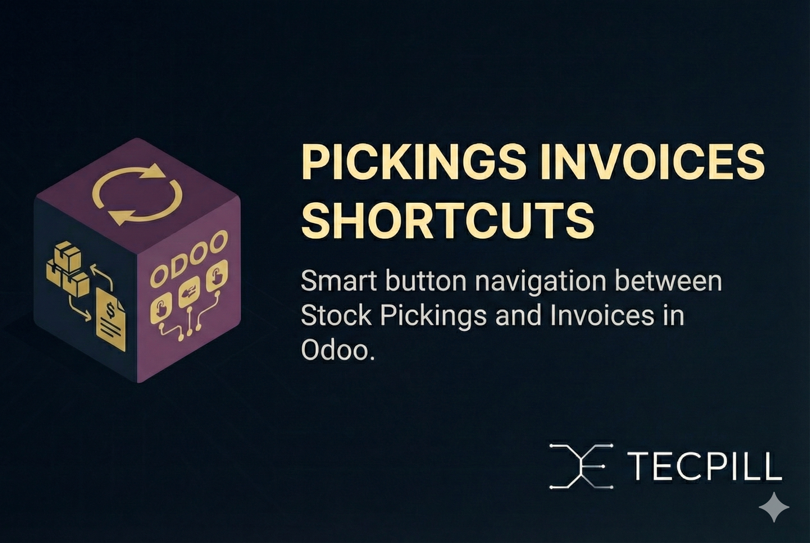

Smart button navigation between Stock Pickings and Invoices in Odoo 18 - Adding only the truly missing navigation links.
After careful audit, we discovered that most functionality already exists in Odoo - this module adds just the 3 missing smart buttons for complete navigation workflow.
✅ Simple Installation:
🎯 Scope Focus: This module deliberately excludes functionality that already exists in Odoo core, focusing only on the missing navigation links.
For support and assistance, contact us at admin@tecpill.com